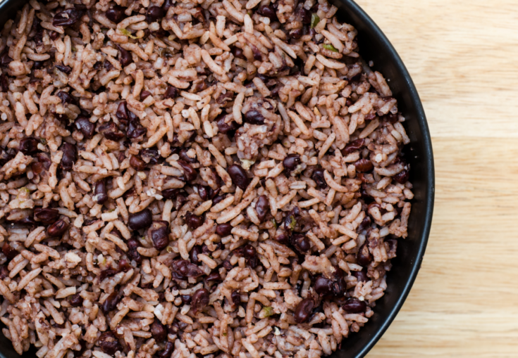

Cuban Congri

Cuban Congri: Black Beans and Rice
A traditional meal in every cuban household. At least what I used to eat a lot growing up. (This is excellent with anything, especially meat).
Ingredients
- 1 cup Rice
- 1 cup Black Beans
- 2 tbs of oil
- 2 cups waters
- A pinch of salt and pepper
Directions
- In a big, pot pour the oil.
- After the oil is heated, add the black beans and cook them in the oil for 1 minute.
- Add the water. Once it's boiled, cover the lid and let it cock for an hour.
- When the beans are al dente (cooked but still a little hard) remove from the stove. There should still be some water in the pot.
- Put the beans aside and don't throw away the water!.
- In another pot, heat some oil like before and add the rice.
- Strain the water from the black beans pot and use that as the water to cook the rice. In case you need
to add more water to cover the rice, that's ok. You want the rice to be covered.
- Cook the rice for 15 minutes. After that, add the black beans to the pot and cook for 10 more minutes.
- Done! Enjoy.
More Recipes